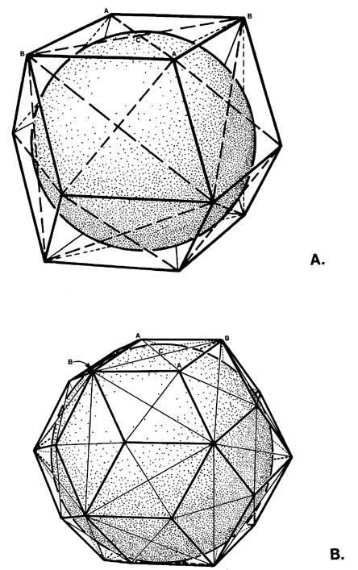

|  |
| Fig. 986.405 Respective Subdivision of Rhombic Dodecahedron (A) and Rhombic Triacontahedron (B) into Diamond-faced Pentahedra: O is at the respective volumetric centers of the two polyhedra, with the short axes A-A and the long axes B-B (diagrams on the right). The central surface angles of the two pentahedra differ as shown. |